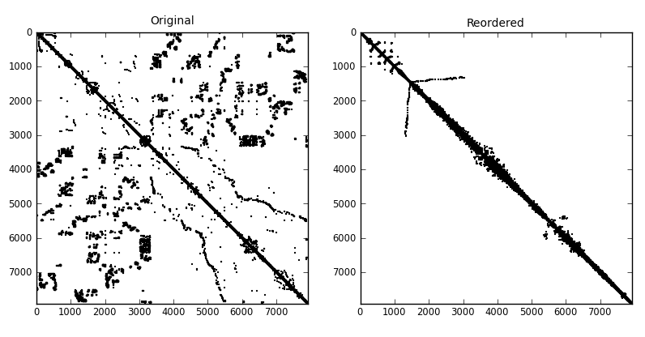

Profile, Wavefront, Bandwidth Reduction¶
The pymc60 Module¶
A Python interface to the HSL subroutine MC60AD.
The functions in this module compute a symmetric permutation of a sparse symmetric matrix so as to reduce its profile, wavefront, or bandwidth via Sloan’s method [SLO] or the reverse Cuthill-McKee method [CM].
References
| [CM] | E. Cuthill and J. McKee, Reducing the bandwidth of sparse symmetric matrices In Proc. 24th Nat. Conf. ACM, pages 157-172, 1969. |
| [RS] | J. K. Reid and J. A. Scott, Ordering symmetric sparse matrices for small profile and wavefront, International Journal for Numerical Methods in Engineering, 45(12), pp. 1737–1755, 1999. |
| [SLO] | S. W. Sloan, An algorithm for profile and wavefront reduction of sparse matrices, International Journal of Numerical Methods in Engineering, 23, pp. 239–251, 1986. |
Functions available¶
- pyorder.pymc60.pymc60.sloan(n, rowind, colptr, icntl=[0, 6], weight=[2, 1])¶
Apply Sloan’s algorithm to reduce the profile and wavefront of a sparse symmetric matrix. Either the lower or the upper triangle of the input matrix should be given in compressed sparse column (csc) or compressed sparse row (csr) format. This includes the diagonal of the matrix. A set of weights can be supplied to define the priority function in Sloan’s method.
Parameters: n: The order of the input matrix. rowind: An integer array (or list) of length nnz giving the row indices of the nonzero elements in each column. colptr: An integer array (or list) of length n+1 giving the indices of the first element of each column in rowind. Note that since either triangle can be given in either csc or csr format, the words ‘row’ and ‘column’ may be swapped in the description above. The indexing in rowind and colptr should be zero-based.
Keywords: icntl: An integer array (or list) of length two of control parameters used during the first phase, where the input data is checked. The method terminates if duplicates of out-of-range indices are discovered (icntl[0]=0) or ignores them (icntl[0]=1). No diagnostic messages will be output if icntl[1]=0. If icntl[1] is > 0, it gives the unit number (in the Fortran sense) where diagonostic messages are output. weight: An integer array (or list) of length two giving the weights in Sloan’s priority function. Reid and Scott (1999) recommend to apply the method twice, with either [2,1] and [16,1], or with [1,2] and [16,1], and to retain the best result. Returns: perm: An integer array of length n giving the variable permutation. If irow and jcol are two integer arrays describing the pattern of the input matrix in triple format, perm[irow] and perm[jrow] describe the permuted matrix. rinfo: A real array of length 4 giving statistics on the permuted matrix. rinfo[0] = profile rinfo[1] = maximum wavefront rinfo[2] = semi-bandwidth rinfo[3] = root-mean-square wavefront.
- pyorder.pymc60.pymc60.rcmk(n, rowind, colptr, icntl=[0, 6])¶
Apply the reverse Cuthill-McKee algorithm to reduce the bandwidth of a sparse symmetric matrix. Either the lower or the upper triangle of the input matrix should be given in compressed sparse column (csc) or compressed sparse row (csr) format. This includes the diagonal of the matrix.
Parameters: n: The order of the input matrix. rowind: An integer array (or list) of length nnz giving the row indices of the nonzero elements in each column. colptr: An integer array (or list) of length n+1 giving the indices of the first element of each column in rowind. Note that since either triangle can be given in either csc or csr format, the words ‘row’ and ‘column’ may be swapped in the description above. The indexing in rowind and colptr should be zero-based.
Keywords: icntl: An integer array (or list) of length two of control parameters used during the first phase, where the input data is checked. The method terminates if duplicates of out-of-range indices are discovered (icntl[0]=0) or ignores them (icntl[0]=1). No diagnostic messages will be output if icntl[1]=0. If icntl[1] is > 0, it gives the unit number (in the Fortran sense) where diagonostic messages are output. Returns: perm: An integer array of length n giving the variable permutation. If irow and jcol are two integer arrays describing the pattern of the input matrix in triple format, perm[irow] and perm[jcol] describe the permuted matrix. rinfo: A real array of length 4 giving statistics on the permuted matrix. rinfo[0] = profile rinfo[1] = maximum wavefront rinfo[2] = semi-bandwidth rinfo[3] = root-mean-square wavefront.
- pyorder.pymc60.pymc60.reorder_matrix(n, rowind, colptr, icntl=[0, 6], jcntl=[0, 0], weight=[2, 1])¶
Helper function called by sloan and rcm performing the bulk of the work when applying Sloan’s method or the reverse Cuthill-McKee algorithm to a symmetric sparse matrix.
Examples¶
Basic Usage¶
The first example is the one from the documentation of the HSL subroutine MC60. In it, we call the Fortran subroutines directly. As before, this means that all indices must be 1-based. The permutation vector and indices of the supervariables are also 1-based.
1 2 3 4 5 6 7 8 9 10 11 12 13 14 15 16 17 18 19 20 21 22 23 24 25 26 27 28 29 30 31 32 33 34 35 36 | "MC60 demo from the HSL MC60 spec sheet"
import numpy as np
from pyorder.pymc60 import mc60module
icntl = np.array([0,6], dtype=np.int32) # Abort on error
jcntl = np.array([0,0], dtype=np.int32) # Sloan's alg with auto choice
weight = np.array([2,1]) # Weights in Sloan's alg
# Store lower triangle of symmetric matrix in csr format (1-based)
n = 5
icptr = np.array([1,6,8,9,10,11], dtype=np.int32) # nnz = 10
irn = np.empty(2*(icptr[-1]-1), dtype=np.int32)
irn[:icptr[-1]-1] = np.array([1,2,3,4,5,2,3,3,4,5], dtype=np.int32)
# Check data
info = mc60module.mc60ad(irn, icptr, icntl)
# Compute supervariables
nsup, svar, vars = mc60module.mc60bd(irn, icptr)
print 'The number of supervariables is ', nsup
# Permute reduced matrix
permsv = np.empty(nsup, dtype=np.int32)
pair = np.empty((2, nsup/2), dtype=np.int32)
info = mc60module.mc60cd(n,irn,icptr[:nsup+1],vars[:nsup],jcntl,permsv,weight,pair)
# Compute profile and wavefront
rinfo = mc60module.mc60fd(n, irn, icptr[:nsup+1], vars[:nsup], permsv)
# Obtain variable permutation from supervariable permutation
perm, possv = mc60module.mc60dd(svar, vars[:nsup], permsv)
print 'The variable permutation is ', perm # 1-based
print 'The profile is ', rinfo[0]
print 'The maximum wavefront is ', rinfo[1]
print 'The semibandwidth is ', rinfo[2]
print 'The root-mean-square wavefront is ', rinfo[3]
|
Python Interface¶
The Python interface provides smoother and more intuitive application of Sloan’s and the reverse Cuthill-McKee methods by way of the sloan() and rcmk() functions. At the same time, we use input data in either Harwell-Boeing or Rutherford-Boeing format.
1 2 3 4 5 6 7 8 9 10 11 12 13 14 15 16 17 18 19 20 21 22 23 24 25 26 27 28 29 30 31 32 33 34 35 36 37 38 | "MC60 demo with input matrix in HB or RB format"
import numpy as np
from pyorder.pymc60 import sloan, rcmk
from pyorder.tools.hrb import HarwellBoeingMatrix, RutherfordBoeingData
from pyorder.tools.spy import FastSpy
import pylab
import sys
if len(sys.argv) < 2:
sys.stderr.write('Data file name must be supplied\n')
sys.exit(1)
fname = sys.argv[1]
#M = HarwellBoeingMatrix(fname, patternOnly=True, readRhs=False)
M = RutherfordBoeingData(fname, patternOnly=True, readRhs=False)
if M.nrow != M.ncol or not M.issym:
sys.stderr.write('Input matrix must be square and symmetric\n')
sys.exit(1)
# Compute reverse Cuthill-McKee ordering
perm, rinfo = rcmk(M.nrow, M.ind, M.ip)
# Or: Compute Sloan's ordering
#perm, rinfo = sloan(M.nrow, M.ind, M.ip)
# Plot original matrix
(irow, jcol) = M.find()
left = pylab.subplot(121)
FastSpy(M.nrow, M.ncol, irow, jcol, sym=M.issym,
ax=left.get_axes(), title='Original')
# Apply permutation and plot reordered matrix
right = pylab.subplot(122)
FastSpy(M.nrow, M.ncol, perm[irow], perm[jcol], sym=M.issym,
ax=right.get_axes(), title='Reordered')
pylab.show()
|
For illustration, here is the result of this example on a problem from the University of Florida Sparse Matrix Collection. I used matrix commanche_dual in Rutherford-Boeing format.
Here is the matrix reordered according to Sloan’s algorithm.
Here it is reordered according to the reverse Cuthill-McKee algorithm.